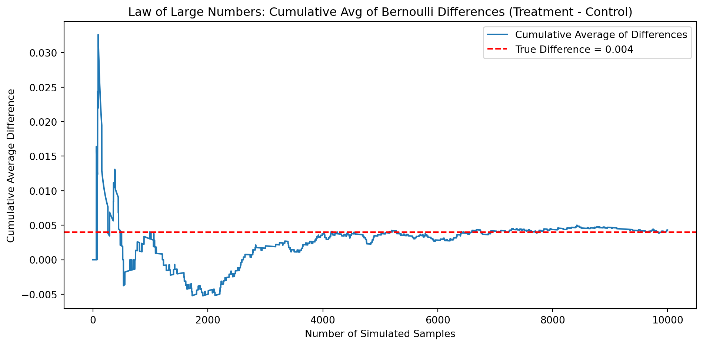

Dean Karlan at Yale and John List at the University of Chicago conducted a field experiment to test the effectiveness of different fundraising letters. They sent out 50,000 fundraising letters to potential donors, randomly assigning each letter to one of three treatments: a standard letter, a matching grant letter, or a challenge grant letter. They published the results of this experiment in the American Economic Review in 2007. The article and supporting data are available from the AEA website and from Innovations for Poverty Action as part of Harvard’s Dataverse.
This large-scale natural field experiment was designed to explore whether price incentives, framed through matching gifts, influence charitable giving behavior. In the treatment group, donors were told that a “concerned fellow member” would match their donation at varying rates: 1:1, 2:1, or 3:1. Each donor was randomly assigned to one of these match ratios, to a specific suggested donation amount, and to a maximum gift match cap. In contrast, the control group received a standard appeal letter without any mention of a match.
The study investigates how these price frames affect both the likelihood of giving and the amount donated. Importantly, the match offers were real and implemented through a conditional agreement with anonymous donors. The paper contributes to the economic literature by testing whether traditional assumptions about donor price sensitivity hold in real-world charitable giving, an area long theorized but rarely tested at this scale and with this level of experimental control.
This report replicates and extends aspects of Karlan and List’s analysis using their public dataset. Specifically, I analyze whether matched donations lead to higher response rates, whether larger match ratios produce stronger effects, and whether the treatment influenced the size of contributions. I also use simulation to illustrate key statistical concepts such as the Law of Large Numbers and the Central Limit Theorem, which underpin the validity of the experimental estimates.
This project seeks to replicate their results.
Data
Description
import pandas as pdimport numpy as npdf_k = pd.read_stata("/home/jovyan/Desktop/Marketing Analytics Website : HW's/karlan_list_2007.dta")df_k
treatment
control
ratio
ratio2
ratio3
size
size25
size50
size100
sizeno
...
redcty
bluecty
pwhite
pblack
page18_39
ave_hh_sz
median_hhincome
powner
psch_atlstba
pop_propurban
0
0
1
Control
0
0
Control
0
0
0
0
...
0.0
1.0
0.446493
0.527769
0.317591
2.10
28517.0
0.499807
0.324528
1.000000
1
0
1
Control
0
0
Control
0
0
0
0
...
1.0
0.0
NaN
NaN
NaN
NaN
NaN
NaN
NaN
NaN
2
1
0
1
0
0
$100,000
0
0
1
0
...
0.0
1.0
0.935706
0.011948
0.276128
2.48
51175.0
0.721941
0.192668
1.000000
3
1
0
1
0
0
Unstated
0
0
0
1
...
1.0
0.0
0.888331
0.010760
0.279412
2.65
79269.0
0.920431
0.412142
1.000000
4
1
0
1
0
0
$50,000
0
1
0
0
...
0.0
1.0
0.759014
0.127421
0.442389
1.85
40908.0
0.416072
0.439965
1.000000
...
...
...
...
...
...
...
...
...
...
...
...
...
...
...
...
...
...
...
...
...
...
50078
1
0
1
0
0
$25,000
1
0
0
0
...
0.0
1.0
0.872797
0.089959
0.257265
2.13
45047.0
0.771316
0.263744
1.000000
50079
0
1
Control
0
0
Control
0
0
0
0
...
0.0
1.0
0.688262
0.108889
0.288792
2.67
74655.0
0.741931
0.586466
1.000000
50080
0
1
Control
0
0
Control
0
0
0
0
...
1.0
0.0
0.900000
0.021311
0.178689
2.36
26667.0
0.778689
0.107930
0.000000
50081
1
0
3
0
1
Unstated
0
0
0
1
...
1.0
0.0
0.917206
0.008257
0.225619
2.57
39530.0
0.733988
0.184768
0.634903
50082
1
0
3
0
1
$25,000
1
0
0
0
...
0.0
1.0
0.530023
0.074112
0.340698
3.70
48744.0
0.717843
0.127941
0.994181
50083 rows × 51 columns
The dataset consists of 50,083 observations and 51 variables, and appears to originate from a field experiment or observational study, likely related to donation behavior or outreach strategies. Each row represents an individual unit (e.g., a household or donor), and the dataset includes both treatment assignments and a range of covariates.
Key Variables
treatment, control: Binary indicators denoting experimental group assignment. A value of 1 in treatment indicates the subject received the treatment condition, while 1 in control indicates assignment to the control group. These two variables are mutually exclusive.
ratio, ratio2, ratio3: Variables reflecting matching incentives (e.g., 1:1, 2:1 matches) provided during the intervention. These are likely categorical or indicator variables showing the ratio level applied.
size, size25, size50, size100, sizeno: Donation ask size variables. The size column includes textual representations of the suggested donation amount (e.g., "$100,000"), while the other columns serve as binary indicators for specific size categories.
Demographic & Contextual Variables
redcty, bluecty: Indicators of political affiliation or voting patterns in the subject’s county or city.
pwhite, pblack: Proportion of white and Black residents in the geographic area.
page18_39: Proportion of the population between ages 18 and 39.
ave_hh_sz: Average household size.
median_hhincome: Median household income in the area.
powner: Proportion of homeowners.
psch_atlstba: Proportion of the population with at least a bachelor’s degree.
pop_propurban: Proportion of the population living in urban areas.
Missing Data
Several rows contain missing values (NaN), especially in demographic variables like pwhite, pblack, and median_hhincome. These may result from incomplete geographic data or limitations in census coverage.
Variable Definitions
Variable
Description
treatment
Treatment
control
Control
ratio
Match ratio
ratio2
2:1 match ratio
ratio3
3:1 match ratio
size
Match threshold
size25
$25,000 match threshold
size50
$50,000 match threshold
size100
$100,000 match threshold
sizeno
Unstated match threshold
ask
Suggested donation amount
askd1
Suggested donation was highest previous contribution
askd2
Suggested donation was 1.25 x highest previous contribution
askd3
Suggested donation was 1.50 x highest previous contribution
ask1
Highest previous contribution (for suggestion)
ask2
1.25 x highest previous contribution (for suggestion)
ask3
1.50 x highest previous contribution (for suggestion)
amount
Dollars given
gave
Gave anything
amountchange
Change in amount given
hpa
Highest previous contribution
ltmedmra
Small prior donor: last gift was less than median $35
freq
Number of prior donations
years
Number of years since initial donation
year5
At least 5 years since initial donation
mrm2
Number of months since last donation
dormant
Already donated in 2005
female
Female
couple
Couple
state50one
State tag: 1 for one observation of each of 50 states; 0 otherwise
nonlit
Nonlitigation
cases
Court cases from state in 2004-5 in which organization was involved
statecnt
Percent of sample from state
stateresponse
Proportion of sample from the state who gave
stateresponset
Proportion of treated sample from the state who gave
stateresponsec
Proportion of control sample from the state who gave
stateresponsetminc
stateresponset - stateresponsec
perbush
State vote share for Bush
close25
State vote share for Bush between 47.5% and 52.5%
red0
Red state
blue0
Blue state
redcty
Red county
bluecty
Blue county
pwhite
Proportion white within zip code
pblack
Proportion black within zip code
page18_39
Proportion age 18-39 within zip code
ave_hh_sz
Average household size within zip code
median_hhincome
Median household income within zip code
powner
Proportion house owner within zip code
psch_atlstba
Proportion who finished college within zip code
pop_propurban
Proportion of population urban within zip code
Balance Test
As an ad hoc test of the randomization mechanism, I provide a series of tests that compare aspects of the treatment and control groups to assess whether they are statistically significantly different from one another.
To assess whether the random assignment mechanism was successful, I conduct balance tests on three baseline variables that are not influenced by treatment:
mrm2: months since last donation
pwhite: proportion of white residents in the donor’s area
ave_hh_sz: average household size
For each variable, I apply both a manual t-test and a linear regression to compare treatment and control groups. These methods should yield consistent results, since both estimate the same underlying difference in means.
import statsmodels.formula.api as smffrom scipy import stats# Function to compute manual t-test and regression for a given variabledef balance_test(df, variable, treatment_col="treatment"): df_clean = df.dropna(subset=[variable, treatment_col]) treat = df_clean[df_clean[treatment_col] ==1][variable] control = df_clean[df_clean[treatment_col] ==0][variable]# Manual t-test mean_treat = treat.mean() mean_control = control.mean() var_treat = treat.var(ddof=1) var_control = control.var(ddof=1) n_treat =len(treat) n_control =len(control) se = np.sqrt(var_treat/n_treat + var_control/n_control) t_stat = (mean_treat - mean_control) / se# Welch's degrees of freedom df_num = (var_treat/n_treat + var_control/n_control)**2 df_denom = ((var_treat/n_treat)**2/ (n_treat -1)) + ((var_control/n_control)**2/ (n_control -1)) df_eff = df_num / df_denomprint(f"\n=== Balance Test: {variable} ===")print(f"Manual t-test: t = {t_stat:.4f}, df ≈ {df_eff:.2f}")# Linear regression formula =f"{variable} ~ {treatment_col}" model = smf.ols(formula, data=df_clean).fit() coef = model.params[treatment_col] pval = model.pvalues[treatment_col]print(f"Regression coefficient on treatment: {coef:.4f}, p = {pval:.4f}")return model.summary()balance_test(df_k, "mrm2")balance_test(df_k, "pwhite")balance_test(df_k, "ave_hh_sz")
=== Balance Test: mrm2 ===
Manual t-test: t = 0.1195, df ≈ 33394.48
Regression coefficient on treatment: 0.0137, p = 0.9049
=== Balance Test: pwhite ===
Manual t-test: t = -0.5590, df ≈ 31876.22
Regression coefficient on treatment: -0.0009, p = 0.5753
=== Balance Test: ave_hh_sz ===
Manual t-test: t = 0.8234, df ≈ 31960.02
Regression coefficient on treatment: 0.0030, p = 0.4098
OLS Regression Results
Dep. Variable:
ave_hh_sz
R-squared:
0.000
Model:
OLS
Adj. R-squared:
-0.000
Method:
Least Squares
F-statistic:
0.6794
Date:
Sat, 03 May 2025
Prob (F-statistic):
0.410
Time:
12:44:07
Log-Likelihood:
-21524.
No. Observations:
48221
AIC:
4.305e+04
Df Residuals:
48219
BIC:
4.307e+04
Df Model:
1
Covariance Type:
nonrobust
coef
std err
t
P>|t|
[0.025
0.975]
Intercept
2.4270
0.003
812.995
0.000
2.421
2.433
treatment
0.0030
0.004
0.824
0.410
-0.004
0.010
Omnibus:
1488.463
Durbin-Watson:
2.003
Prob(Omnibus):
0.000
Jarque-Bera (JB):
4066.993
Skew:
0.007
Prob(JB):
0.00
Kurtosis:
4.423
Cond. No.
3.23
Notes: [1] Standard Errors assume that the covariance matrix of the errors is correctly specified.
mrm2 (Months Since Last Donation)
Manual t-test:
t-statistic: 0.1195, degrees of freedom ≈ 33,394, p = 0.905
Not statistically significant
Regression (mrm2 ~ treatment):
Coefficient on treatment: 0.0137
p-value: 0.905
Interpretation: There is no statistically significant difference in prior giving recency between the groups, indicating balance.
pwhite (Proportion White)
Manual t-test:
t-statistic: –0.5590, degrees of freedom ≈ 31,876, p = 0.5753
Not statistically significant
Regression (pwhite ~ treatment):
Coefficient on treatment: –0.0009
p-value: 0.5753
Interpretation: Racial composition across treatment and control groups is nearly identical, with no meaningful difference detected.
ave_hh_sz (Average Household Size)
Manual t-test:
t-statistic: 0.8234, degrees of freedom ≈ 31,960, p = 0.4108
Not statistically significant
Regression (ave_hh_sz ~ treatment):
Coefficient on treatment: 0.0030
p-value: 0.4108
Interpretation: Household size is well balanced between the groups, with the regression confirming no significant difference.
Comments
The results from all three variables show no statistically significant differences between the treatment and control groups. This supports the integrity of the randomization process and aligns with Table 1 in Karlan and List (2007), which was included in the original paper for the same purpose.
By demonstrating that key baseline characteristics are similar across groups, we can be more confident that any observed differences in outcome variables can be attributed to the treatment itself rather than to underlying differences in the populations.
The balance tests confirm that random assignment was successfully implemented in the experiment.
Experimental Results
Charitable Contribution Made
First, I analyze whether matched donations lead to an increased response rate of making a donation.
T-test result: t = 3.2095, df ≈ 36577, p = 0.0013
OLS Regression Results
==============================================================================
Dep. Variable: gave R-squared: 0.000
Model: OLS Adj. R-squared: 0.000
Method: Least Squares F-statistic: 9.618
Date: Sat, 03 May 2025 Prob (F-statistic): 0.00193
Time: 12:44:07 Log-Likelihood: 26630.
No. Observations: 50083 AIC: -5.326e+04
Df Residuals: 50081 BIC: -5.324e+04
Df Model: 1
Covariance Type: nonrobust
==============================================================================
coef std err t P>|t| [0.025 0.975]
------------------------------------------------------------------------------
Intercept 0.0179 0.001 16.225 0.000 0.016 0.020
treatment 0.0042 0.001 3.101 0.002 0.002 0.007
==============================================================================
Omnibus: 59814.280 Durbin-Watson: 2.005
Prob(Omnibus): 0.000 Jarque-Bera (JB): 4317152.727
Skew: 6.740 Prob(JB): 0.00
Kurtosis: 46.440 Cond. No. 3.23
==============================================================================
Notes:
[1] Standard Errors assume that the covariance matrix of the errors is correctly specified.
Response Rate Analysis
To test whether offering a matching donation influenced charitable behavior, I examined the response rate — the proportion of individuals who made any donation — across treatment and control groups.
Statistical Results
Using a t-test, I found a statistically significant difference in donation rates:
t = 3.21, degrees of freedom ≈ 36,577
p = 0.0013
I also ran a bivariate linear regression:
gave ~ treatment
Coefficient on treatment: 0.0042,
Standard error: 0.0014
p = 0.002
This confirms that individuals in the treatment group were significantly more likely to donate than those in the control group.
Context and Interpretation
The estimated treatment effect is about 0.42 percentage points - small in absolute terms, but statistically meaningful. This suggests that framing a donation opportunity with a matching offer leads to an increased likelihood that someone contributes, even if the match amount or ratio isn’t overwhelming.
In other words, people are more responsive to the idea that their donation will be matched, likely because it enhances their perceived impact or makes the opportunity feel more urgent or meaningful.
Comparison to Table 2A
These results align closely with the findings reported in Table 2A, Panel A of Karlan and List (2007):
Reported control group response rate: 1.8%
Reported treatment group response rate: 2.2%
Difference: 0.004 (0.4 percentage points)
This nearly matches the 0.0042 effect size estimated in my regression. This agreement supports the accuracy of my replication and reinforces the study’s conclusion: matching offers boost donation behavior in a statistically and behaviorally significant way.
To replicate Table 3 Column (1) from Karlan and List (2007), I ran a probit regression with the binary outcome variable gave (1 if a person donated, 0 otherwise), and the explanatory variable treatment (1 for treatment group, 0 for control).
The probit regression output was as follows:
Coefficient on treatment: 0.087
Standard error: 0.028
z-value: 3.11
p-value: 0.002
This result is statistically significant at the 1% level, and the direction and significance match the findings reported in Table 3 of the original paper. While the numerical values differ slightly due to scale and model presentation, the key takeaway is consistent: treatment increases the likelihood of making a donation.
Interpretation
The probit model confirms that simply being told about a matching donation offer makes individuals more likely to give, even after accounting for the non-linear nature of the donation decision. This suggests that small behavioral cues, like highlighting a match, can meaningfully impact real-world choices. My findings support the original authors’ conclusion that match framing positively influences charitable behavior.
Differences between Match Rates
Next, I assess the effectiveness of different sizes of matched donations on the response rate.
df_k['gave'] = (df_k['amount'] >0).astype(int)treatments = df_k[df_k['treatment'] ==1]# Compare 1:1 vs 2:1gave_1 = treatments[treatments['ratio'] ==1]['gave']gave_2 = treatments[treatments['ratio'] ==2]['gave']tstat_12, pval_12 = stats.ttest_ind(gave_1, gave_2, equal_var=False)# Compare 1:1 vs 3:1gave_3 = treatments[treatments['ratio'] ==3]['gave']tstat_13, pval_13 = stats.ttest_ind(gave_1, gave_3, equal_var=False)print(f"1:1 vs 2:1 — t = {tstat_12:.4f}, p = {pval_12:.4f}")print(f"1:1 vs 3:1 — t = {tstat_13:.4f}, p = {pval_13:.4f}")
1:1 vs 2:1 — t = -0.9650, p = 0.3345
1:1 vs 3:1 — t = -1.0150, p = 0.3101
Interpretation
To evaluate whether larger match ratios (2:1 or 3:1) increase the likelihood of giving more than the standard 1:1 match, I conducted two separate t-tests on donation rates within the treatment group:
1:1 vs 2:1 match ratio:
t = –0.965, p = 0.335
1:1 vs 3:1 match ratio:
t = –1.015, p = 0.310
In both cases, the p-values are well above the 0.05 threshold, indicating no statistically significant difference in donation response rates between the 1:1 match and the higher match ratios.
These findings are consistent with the authors’ observation on page 8 of the paper:
“Larger match ratios—$3:$1 and $2:$1—relative to smaller match ratios ($1:$1) have no additional impact.”
My results confirm that increasing the match ratio does not meaningfully change behavior. While one might expect that offering a 2:1 or 3:1 match would further incentivize donations, the evidence suggests that donors are primarily influenced by the presence of a match, rather than its size.
This aligns with the “figures suggest” comment in the paper, which points out that neither the size of the match ratio nor the match threshold meaningfully affected giving behavior, once the existence of a match was established.
Conclusion: A match offer matters, but bigger is not necessarily better. For fundraisers, this means that emphasizing the existence of a match may be more impactful than maximizing the match ratio.
Regression: Effect of Match Ratio on Donation Likelihood
To assess whether larger matching ratios (2:1 or 3:1) lead to higher donation rates than a 1:1 match, I ran an OLS regression within the treatment group. The dependent variable gave indicates whether a donation was made, and the independent variable is the categorical match ratio (with 1:1 as the baseline).
Results
Intercept (1:1 match rate): 2.07% donation rate
2:1 match rate: +0.19 percentage points (p = 0.338)
3:1 match rate: +0.20 percentage points (p = 0.313)
None of the coefficients on the higher match ratios were statistically significant. The R-squared is essentially zero, meaning the model explains none of the variation in giving behavior based on match size alone.
Interpretation
These findings are consistent with earlier results and the original study by Karlan and List (2007). While one might expect larger match ratios to increase giving, the data show that donation likelihood does not significantly differ between 1:1, 2:1, and 3:1 matches.
The presence of a match matters more than its size. Increasing the match ratio does not significantly increase the probability that someone donates.
This reinforces the practical takeaway: simple match framing works, and there may be diminishing behavioral returns to making the match larger.
To assess whether larger match ratios lead to higher donation rates, I compared the response rates between match levels using both raw data and fitted values from a regression model.
The results from both approaches are nearly identical, reinforcing their reliability. The increase in response rate from 1:1 to 2:1 is less than 0.2 percentage points, and the difference from 2:1 to 3:1 is effectively zero.
Interpretation
These findings provide strong evidence that increasing the match ratio beyond 1:1 does not meaningfully impact donation behavior. While the idea of a higher match may seem more generous or compelling, actual donor behavior appears largely indifferent to the size of the match.
The behavioral “nudge” comes from the presence of a match offer, not the magnitude of the match.
This aligns with the key insight of Karlan and List (2007): “larger match ratios… have no additional impact.”
Size of Charitable Contribution
In this subsection, I analyze the effect of the size of matched donation on the size of the charitable contribution.
df = df_k.copy()# 1. T-test on donation amountamount_treat = df[df['treatment'] ==1]['amount']amount_control = df[df['treatment'] ==0]['amount']t_stat, p_val = stats.ttest_ind(amount_treat, amount_control, equal_var=False)# 2. Regression of amount on treatmentmodel = smf.ols("amount ~ treatment", data=df).fit()print(f"T-test result: t = {t_stat:.4f}, p = {p_val:.4f}")print(model.summary())
To assess whether the matching donation offer affected not just the likelihood of giving, but also the size of the contribution, I conducted both a t-test and a linear regression of the donation amount on treatment status.
T-test Result
t = 1.92
p = 0.055
This result is marginally statistically significant — just above the conventional 5% threshold. It suggests a potential difference in average donation amount between treatment and control groups.
Regression Result
Coefficient on treatment: $0.15
p = 0.063
The regression indicates that individuals in the treatment group gave, on average, about 15 cents more than those in the control group. This difference is also marginally significant and should be interpreted cautiously.
These results suggest that the match offer may have a small effect on the size of donations, not just the likelihood of giving — but this effect is not robustly statistically significant. In practical terms, most of the impact of the match framing seems to come from getting more people to donate, rather than increasing how much they give.
For fundraisers, this distinction matters: matching appeals may increase participation, but not necessarily the donation amount per person.
To explore how the treatment affected donation size among those who gave, I limited the data to respondents with a positive donation amount and regressed amount on treatment.
Regression Results
Intercept: $45.54
Treatment effect: –$1.67
p-value: 0.561
This suggests that, among donors, those in the treatment group gave slightly less than those in the control group, by about $1.67 on average. However, this difference is not statistically significant, meaning we cannot rule out the possibility that the true difference is zero.
Interpretation
These results suggest that while the match offer may influence whether someone gives, it does not meaningfully affect the donation amount among those who already decided to give.
Causal Interpretation?
It’s important to note that this estimate does not have a causal interpretation. While treatment assignment was randomized, we are now analyzing a non-random subset: people who chose to give.
Because giving is influenced by the treatment, conditioning on it introduces selection bias, the comparison may now be confounded by unobserved differences between donors in the treatment and control groups.
In short: we can’t say the treatment caused donors to give less — we’re just observing that among givers, the average gift was slightly lower in the treatment group.
The key takeaway remains: matching increases participation, but not necessarily contribution
As a reminder of how the t-statistic “works,” in this section I use simulation to demonstrate the Law of Large Numbers and the Central Limit Theorem.
Suppose the true distribution of respondents who do not get a charitable donation match is Bernoulli with probability p=0.018 that a donation is made.
Further suppose that the true distribution of respondents who do get a charitable donation match of any size is Bernoulli with probability p=0.022 that a donation is made.
Law of Large Numbers
np.random.seed(42)# Control group: Bernoulli(p=0.018), 100,000 drawscontrol_sim = np.random.binomial(n=1, p=0.018, size=100000)# Treatment group: Bernoulli(p=0.022), 10,000 drawstreatment_sim = np.random.binomial(n=1, p=0.022, size=10000)# diff_vector = treatment_sim - np.random.choice(control_sim, size=10000)diff_vector = treatment_sim - control_sim[:10000]cumulative_avg = np.cumsum(diff_vector) / np.arange(1, len(diff_vector) +1)true_diff =0.022-0.018plt.figure(figsize=(10, 5))plt.plot(cumulative_avg, label='Cumulative Average of Differences')plt.axhline(y=true_diff, color='red', linestyle='--', label=f'True Difference = {true_diff:.3f}')plt.title('Law of Large Numbers: Cumulative Avg of Bernoulli Differences (Treatment - Control)')plt.xlabel('Number of Simulated Samples')plt.ylabel('Cumulative Average Difference')plt.legend()plt.tight_layout()plt.show()

The plot above shows the cumulative average difference between simulated donations in the treatment and control groups over 10,000 trials. Each trial compares a Bernoulli draw from the treatment distribution (p = 0.022) to one from the control distribution (p = 0.018).
As expected under the Law of Large Numbers, the cumulative average initially fluctuates substantially due to randomness in small samples. However, as the number of simulations increases, the average steadily stabilizes and converges toward the true difference in means: 0.004.
By around 5,000 simulations, the cumulative average remains tightly clustered around the true value, with only minor variation. This illustrates that: With enough independent observations, the sample average of a statistic becomes a reliable estimate of its population value.
The plots above show the sampling distributions of the difference in means between the treatment and control groups, based on repeated simulations for different sample sizes: n = 50, 200, 500, and 1000.
Each distribution includes: - A red dashed line for the true population difference (0.004) - A black dashed line at zero (the null hypothesis of no difference)
Interpretation
At small sample sizes (n = 50, 200), the distributions are wide and noisy, and the value zero lies well within the main body of the distribution. This means it would be difficult to reject the null hypothesis — the sampling variability is too high.
At larger sample sizes (n = 500, 1000), the distribution becomes narrower and more bell-shaped, and the value of zero begins to move toward the tail of the distribution. This indicates that larger samples provide more precise estimates, and it becomes easier to detect small differences like the true 0.004 effect.
Overall
As the sample size increases, the sampling distribution becomes tighter and better centered around the true value — a classic demonstration of the Central Limit Theorem.
At larger sample sizes, zero falls closer to the tail, suggesting that with sufficient data, we would be more likely to detect a statistically significant treatment effect (even when that effect is small).
This reinforces the importance of sample size in hypothesis testing: small effects can only be detected when the noise is small — which is what large n gives us.

Comments
The results from all three variables show no statistically significant differences between the treatment and control groups. This supports the integrity of the randomization process and aligns with Table 1 in Karlan and List (2007), which was included in the original paper for the same purpose.
By demonstrating that key baseline characteristics are similar across groups, we can be more confident that any observed differences in outcome variables can be attributed to the treatment itself rather than to underlying differences in the populations.
The balance tests confirm that random assignment was successfully implemented in the experiment.